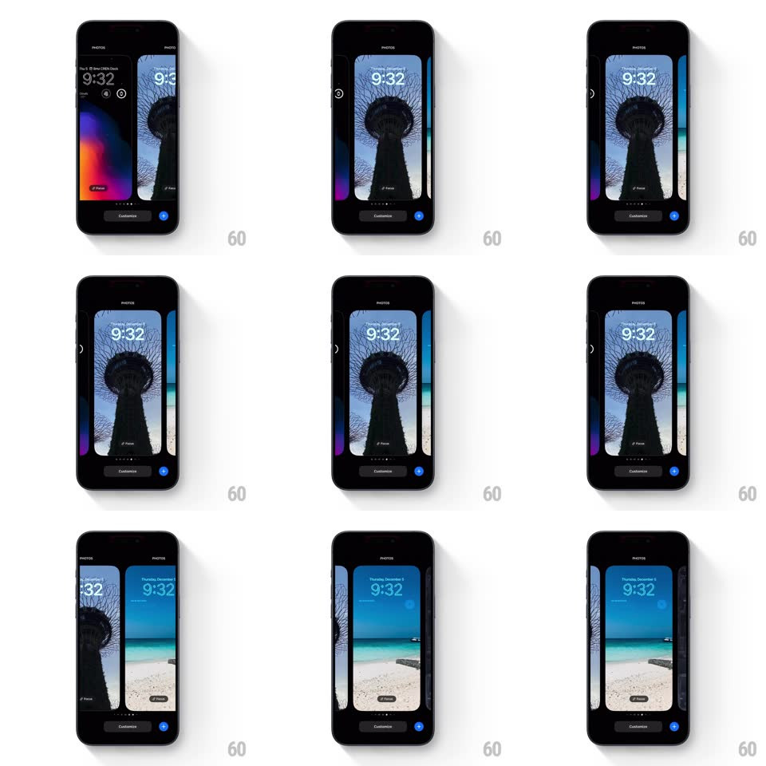

Media
Frame-by-frame

Rebuild this interaction 1:1: iOS lock-screen wallpaper gallery swipe - horizontal swipes page between wallpaper cards with a springy snap, the current card sliding off as the next centers itself, with page dots and the Customize button pinned below.

Rebuild this interaction 1:1: iOS lock-screen wallpaper gallery swipe - horizontal swipes page between wallpaper cards with a springy snap, the current card sliding off as the next centers itself, with page dots and the Customize button pinned below. ## Integration Integration: stack-agnostic spec - springs given as stiffness/damping, timed motions as duration + curve; map every value to your framework and animation library of choice. ## Scene Black wallpaper gallery: centered lock-screen card (9:32 clock, date, Focus button) showing photos (gradient art, Supertree night shot, beach), generous peeks of neighboring cards at both edges, page dots, a "Customize" button, and a blue add button. ## Motion spec Pattern: horizontal card pager with spring snap. - Drag moves the card strip 1:1; neighboring cards remain visible at the edges through the whole gesture. - Release snaps the nearest card to center (spring ~300/26, ~380ms, ~2% overshoot). - The centered card holds full scale; off-center cards sit ~5% smaller, interpolated continuously with strip position. - Page dots update on settle: active dot becomes a white pill (~16px), others stay gray dots (200ms crossfade/width). ## Calibration - The spring settle is the character - quick, single soft overshoot, no wobble. - Card scale is position-driven; there is no post-snap scale animation. ## Reduced motion Instant page change with 150ms crossfade on swipe; dots update statically. ## Don't miss - Cards carry live lock-screen furniture (clock, date, Focus pill) - they move with the card. - Edge peeks are wide enough to identify the next wallpaper's art.